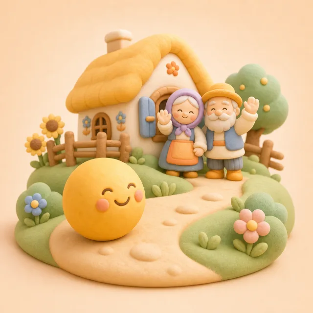
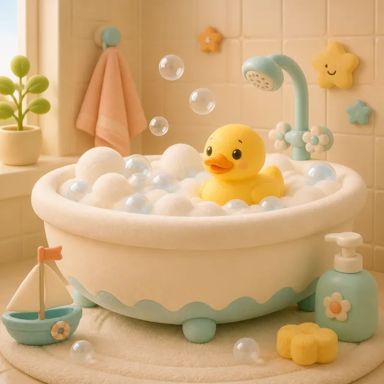

Українська народна казка
Колобок
📖 Читайте дитині своїм голосом

Ігри, казки, сон, прикорм і нагадування про ліки — відповідно до віку малюка.
🔒 Профіль зберігається лише для вашого Telegram-акаунта.
Ігри, казки та віршики відповідно до віку активної дитини.
Сон, прикорм і важливі нагадування в одному місці.
Сьогоднішній розклад і позначки про прийом.
OwlJoy лише нагадує про введений вами розклад і не призначає лікування чи дозування.
Внесіть дані так, як рекомендував лікар.
Оберіть дитину або додайте ще один профіль.
Слухайте разом або читайте дитині своїм голосом.

Ми підберемо короткі ігри за віком: картинки, звуки, перші слова та прості запитання.
Короткі заняття на кілька хвилин. Оберіть те, що зараз найкраще зайде малюку.
Запитайте: як каже котик? Де в нього вушка?
Торкнися бульбашки — лусь!
Торкнися очей, носика, ротика або вушка
Називайте частини личка разом із малюком
Торкнися частини тіла
Покажіть цю ж частину на тілі малюка
Знайди малюка для мами
Покажи радісне личко
Обери одяг для малюка
Оберіть м'який фон, увімкніть таймер і залиште звук грати спокійним циклом.
Оберіть папку: купання, сон, їжа, руханки або тваринки.
Короткі забавлянки для цього моменту дня.

Тиха вода без різких сплесків.